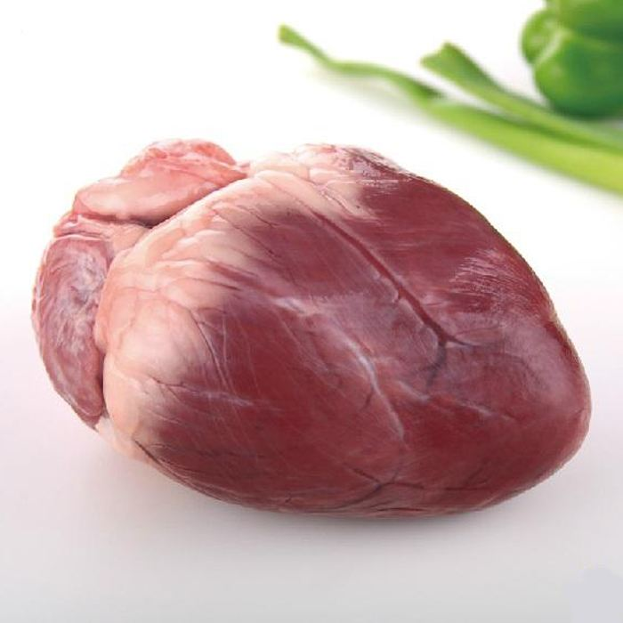

猪心
猪心是即家猪的心脏， 猪心是一种营养十分丰富的食品.富含蛋白质以及各类微量营养素，有助于加强心肌营养， 而且热量比较低，适宜减肥期间食用。


功效
猪心含有丰富的维生素，可以补充心肌营养，从而增强心肌收缩力; 猪心有着良好的安神定惊、养心补血功效，食疗可以治疗惊悸失眠，和和西洋菜煲汤营养价值也很高。

营养价值
猪心对加强心肌营养，增强心肌收缩力有很大的作用。自古即有以脏补脏以心补心的说法， 猪心能补心，治疗心悸、心跳、怔忡。临床有关资料说明，许多心脏疾患与心肌的活动力正常与否有着密切的关系， 因此，猪心虽不能完全改善心脏器质性病变，但可以增强心肌营养，有利于功能性或神经性心脏疾病的痊愈。

适宜人群
一般人群皆可食用猪心，高胆固醇血症者忌食猪心。